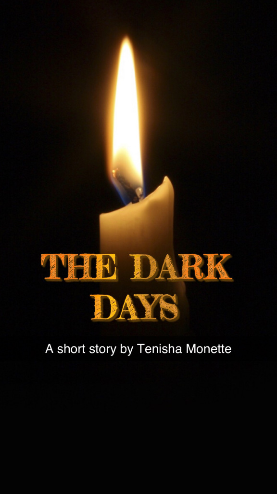

What Makes Night
a short story by: Calvin Croxton
Jan 7, 2020
"The Darkness?" I chuckle softly. "The darkness is coming?" I roar with laughter. "Finally they can see it!" I exclaim as my laughter twists into weeping. I tried to warn them...Back when the screams were just whispers…
This story was inspired by the work of Tenisha Monnett. Click image to view the orgiinal story
image caption
The Darkness is coming
I jumped up and down and waved my arms wildly. "Darkness you say? if that were true then surely you can show us." "follow me!" I said with confidence as i lead them deep into the city. yet wherever i look the darkness retreats. as if my pointing finger were a spotlight shining at 1000 watts.
"He's Lying" one said " He's crazy" said another.
one by they turned their backs and faded into the distance. My head hung low and just as my heart began to sink to the bottom of my stomach I felt a hand on my shoulder. I looked up and my eyes met with a skinny framed man with tattered clothing.
"Fear not! What makes night may leave stars." he said. and then he was gone.
The next day the darkness returned. Creeping forward at an almost indistinguishable pace. I felt a chill shoot through my body. I was afraid and yet I could not look away. the old man's words echoed in my head. I stared into the darkness and it. Stared back. hours turned to days, days turned to weeks, weeks turned to months. My fear subsided and strangely enough something within the darkness felt oddly familiar.
"I cannot stay here." I said to myself. I know Darkness well but I do not know the light. I returned to the crowd hoping maybe there was one who could point the way. My attention was drawn to a chocolate skinned youth. He sat near the edge of the crowd; A part of them and yet separate at the same time. For a second I could have sworn I saw a faint glow about him. I blinked and it was gone. As I approached I felt his warmth and was reassured. "Do you know of the light?" I asked softly.
He smiled and a feeling of total peace pierced deep into the core of my being. " I d-" Just as he parted his lips, a strong arm yanked him away. "do not waste your time with this crazy liar. He seeks to deceive you"
My head turned to meet the voice that was cutting away at my heart.I was shocked at what I saw. I Stepped backwards and almost fell. In that moment I finally understood what it was about the darkness that seemed so familiar. "The dark days are coming" I said to myself.
The Crowd jeered and yelled, drowning out my inner voice " The Dark Days are coming!, The Dark Days are coming!" This must be some sort of cruel joke I thought to myself."The Dark days are here, they are here!" I saw a familiar face watching the commotion. I pushed my way through the crowd fighting to get closer. A minute later I was free from the crowd and she was gone.
I Looked back once more at the crowd. "Maybe they deserve the darkness?" I muttered. Something in me began to crack. I was disgusted with myself for even entertaining the thought. I need to get away from here. As i walked the opposite direction i found myself right back where i started, face to face with the darkness. By this point the darkness had crept right up to our gates and moved steadily closer. Feeling defeated i sat down, crossed my legs, closed my eyes and waited for the darkness to consume us all.
as i waited for the end i explored the world within me. I wondered what was the point? Is this the end? Why reveal the darkness to me and not the light? I searched for peace within myself. If this is the end I don't want to go in fear. I sat in complete stillness and listened for the wisdom of my soul. Thoughts came rushing at me so loud it was overwhelming. I picked them up one at a time, looked them over, embraced them, and then let them pass. I continued this until I heard nothing. Not the screams of the crowd. Not the swirling doubts that once clouded my head. Nothing but the sound of my breathing. In and out. "I am ready. do your worst!" I said and i opened my eyes
I could not tell how much time had passed. I looked around and the Darkness spread as far as my eyes can see. it but wait. how is that I can still see anyway? I looked down at my hands and they had a soft glow like a firefly on a summer night. As my eyes begin to adjust. I noticed a few other lights off in the distance. some barely noticeable as small as a candle, others As Tall and strong as a lighthouse. I stood up and dusted myself off
"Fear not!" I said as i took my first step forward. "what makes night may leave stars"